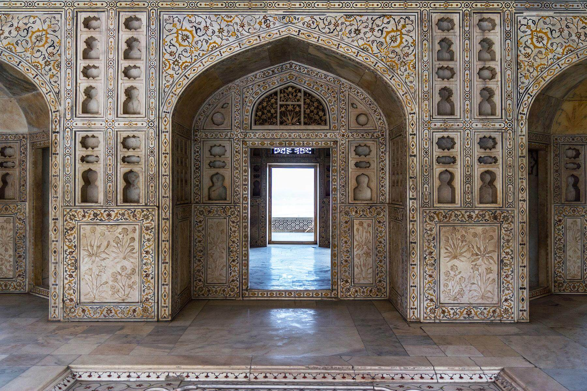
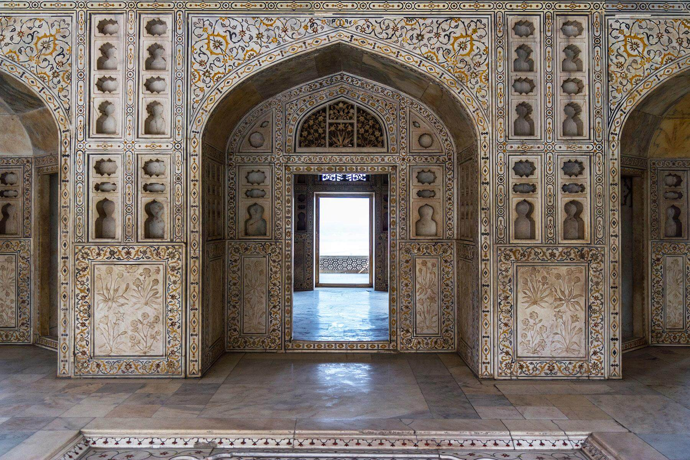

The Gateway of India is an arch-monument built in the early 20th century in the city of Mumbai (Bombay), India. It was erected to commemorate the landing of King-Emperor George V, the first British monarch to visit India, in December 1911 at Strand Road near Wellington Fountain.The foundation stone was laid in March 1913 for a monument built in the Indo-Islamic style, inspired by elements of 16th-century Gujarati architecture. The final design of the monument by architect George Wittet was sanctioned only in 1914, and construction was completed in 1924. The structure is a memorial arch made of basalt, which is 26 metres (85 feet) high, with an architectural resemblance to a triumphial arch as well as Gujarati architecture of the time.The Gateway was the site of a terror attack in August 2003, when there was a bomb blast in a taxi parked in front of it. Access to the gateway was restricted after people congregated at its premises following the 2008 Mumbai terror attacks, in which the Taj Hotel opposite the gateway and other locations in its vicinity were targeted.

The Taj Mahal [4][5][6] is an ivory-white marble mausoleum on the right bank of the river Yamuna in Agra, Uttar Pradesh, India. It was commissioned in 1631 by the fifth Mughal emperor, Shah Jahan (r. 1628–1658) to house the tomb of his favourite wife, Mumtaz Mahal; it also houses the tomb of Shah Jahan himself. The tomb is the centrepiece of a 17-hectare (42-acre) complex, which includes a mosque and a guest house, and is set in formal gardens bounded on three sides by a crenellated wall. Construction of the mausoleum was essentially completed in 1643, but work continued on other phases of the project for another 10 years. The Taj Mahal complex is believed to have been completed in its entirety in 1653 at a cost estimated at the time to be around ₹32 million, which in 2020 would be approximately ₹70 billion (about US $1 billion). The construction project employed some 20,000 artisans under the guidance of a board of architects led by Ustad Ahmad Lahori, the emperor’s court architect. Various types of symbolism have been employed in the Taj to reflect natural beauty and divinity.
 
